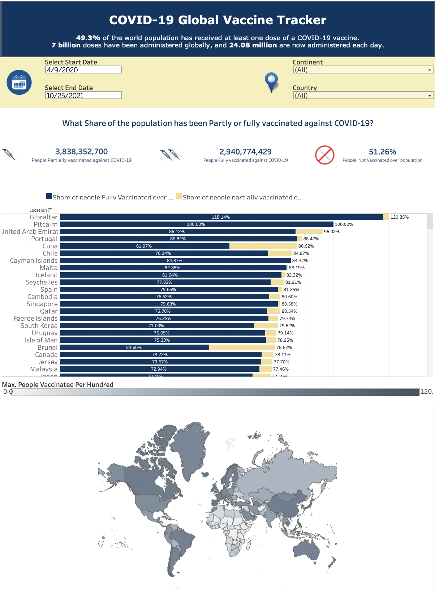
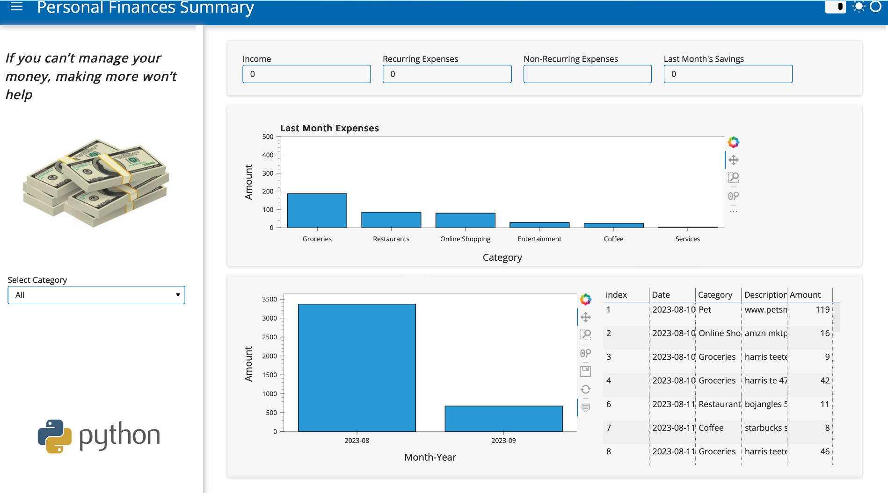

This project involves designing an Entity-Relationship (ER) model, developing a MySQL database, and visualizing insights through a Tableau dashboard, all centered around a dataset related to movie ratings, tagging activities, and genome scores. The project is divided into three main parts:
Developing a physical ER model of the dataset, emphasizing correct database design and normalization principles.
Using the provided ER model to create tables, establish constraints within a normalized relational database, and populate the database with the provided dataset.
Designing and developing a comprehensive dashboard in Tableau to visualize and analyze movie ratings, user engagement, and trends derived from the database, ensuring that the insights are intuitive, actionable, and visually engaging.

Utilized the Stack Overflow Annual Developer Survey 2023 data to classify developer compensation levels worldwide. The project journeyed through data cleaning, feature engineering, and advanced machine learning techniques. Encountered challenges, such as data imbalances and regional variations, highlighted the intricacies of harnessing real-world survey data for predictive insights.

In this project, Python was used along with tools like BeautifulSoup and Pandas, to collect, clean, and analyze data from Wikipedia on the largest revenue-generating companies in the United States, allowing to uncover insights and trends about various industries and highlight the leading companies in each sector.

This accessible dashboard, developed with Tableau and hosted on Tableau Public, visualizes COVID-19 vaccination data sourced from Our World in Data. Users can easily select dates, continents, and countries using intuitive filters to view tailored information. The dashboard features a straightforward bar chart for comparing fully and partially vaccinated populations, a color-coded world map depicting regional vaccination rates, and a detailed scatterplot.
Using R studio and optimization techniques, this project was aimed at creating an art exhibition model that balanced various artistic forms and limited resources. The challenge lay in handling budget limits, space constraints, specific preferences, and the need to include a diverse range of artists and themes. The application of Binary Integer Programming (BIP) was essential to ensure the most art pieces were displayed without going over budget and while meeting all inclusion and representation requirements. This model exemplifies the effective use of advanced mathematical and analytical methods in creating inclusive and varied art exhibitions.
In this project a thorough analysis of customer service call centers is conducted, using advanced simulation techniques to explore and optimize varying queue management policies and operator configurations. Leveraging statistical distributions like Exponential, Triangular, and Normal in R studio, the project evaluates the efficiency and service delivery implications of different scenarios, aiming to enhance the understanding and application of queue management in real-world settings.

This project entails the development of an interactive and insightful dashboard focused on managing and visualizing personal financial transactions. The dashboard is constructed using Python and integrates several libraries such as Pandas for data manipulation and analysis, HoloViz's Panel for crafting interactive panels, Hvplot for plot rendering, and Google Drive and Sheets APIs for accessing and manipulating spreadsheet data.